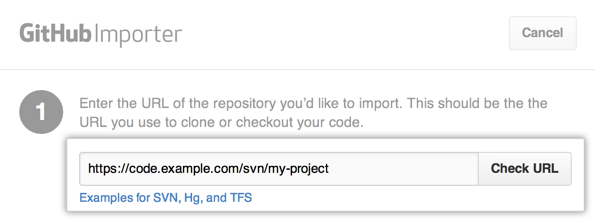
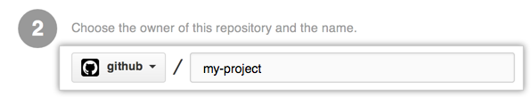
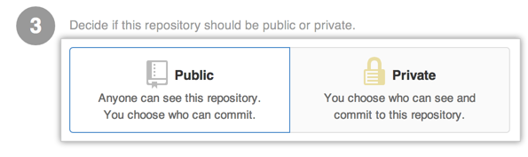
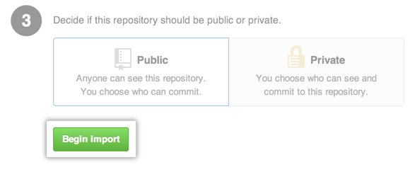

You can import your code from Subversion at the same time that you create a new repository.
In a typical Subversion environment, multiple projects are stored in a single root repository. On GitHub, each of these projects will usually map to a separate Git repository for a user account or organization. We suggest importing each part of your Subversion repository to a separate GitHub repository if:
- Collaborators need to check out or commit to that part of the project separately from the other parts
- You want different parts to have their own access permissions
Importing a Subversion project using GitHub
Tip: The GitHub import tool is not suitable for all imports. For example, if your existing code is hosted on a private network, our tool won't be able to access it. In these cases, we recommend importing from Subversion to Git using svn2git.
- Visit the GitHub Importer page at https://porter.github.com/new.
- On the GitHub Importer page, type the URL of the project you want to import. If you use a trunk-tags-branches structure, provide the parent directory of the "trunk", "tags", and "branches" folders. Once your URL is specified, click Check URL. 
- Specify the GitHub user or organization that will own the repository, as well as the name of the repository on GitHub. 
- Specify whether the new repository should be public or private.
- Public repositories are visible to any user on GitHub, so you can benefit from GitHub's collaborative community.
- Private repositories are only available to the repository owner, as well as any collaborators you choose to share with. For more information, see "What plan should I choose?." 
- When you've reviewed your information, click Begin import. 
You'll receive an email when the repository has been completely imported.
Importing a Subversion project to Git using svn2git
Svn2git uses git-svn to do a complete Subversion import. The tag branches that Subversion leaves behind are converted into Git tags. For more information on conversion using svn2git, see the svn2git README.
Once your conversion is done and you are satisfied with your local repository, push it to GitHub to share the love.